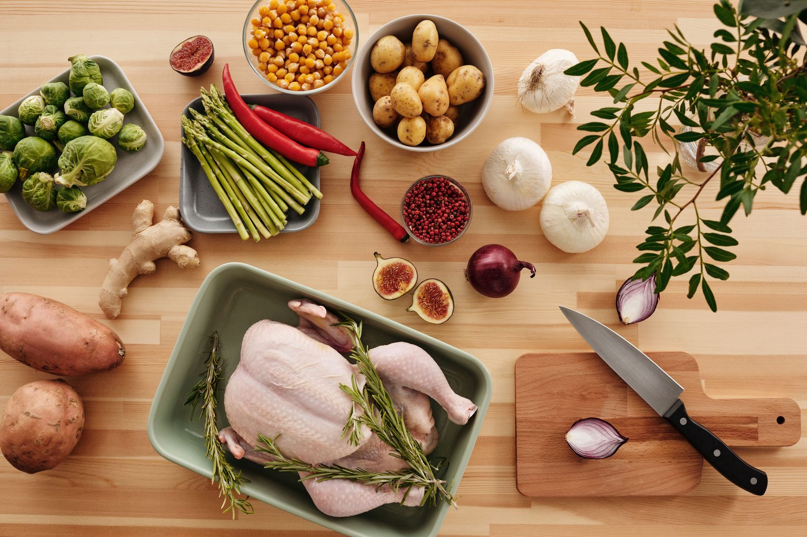

Пищевая клетчатка — один из самых недопотребляемых нутриентов. Средний взрослый ест 15–17г клетчатки в день при рекомендации 25–38г. Увеличение потребления клетчатки снижает риск болезней сердца, диабета 2 типа и ожирения.
Зачем нужна клетчатка
- Здоровье кишечника: Кормит полезные бактерии (пребиотик)
- Контроль веса: Добавляет объём без калорий, замедляет пищеварение
- Сахар в крови: Замедляет усвоение глюкозы
- Здоровье сердца: Связывает холестерин и выводит его из организма
Лучшие продукты с высоким содержанием клетчатки
Бобовые (рекордсмены по клетчатке)
- Чёрная фасоль (100г): 8,7г клетчатки
- Чечевица (100г): 7,9г клетчатки
- Нут (100г): 7,6г клетчатки
- Красная фасоль (100г): 7,4г клетчатки
Злаки
- Овсянка (100г сухой): 10,6г клетчатки
- Киноа (100г варёной): 2,8г клетчатки
- Бурый рис (100г варёного): 1,8г клетчатки
Овощи
- Авокадо (100г): 6,7г клетчатки
- Брюссельская капуста (100г): 3,8г клетчатки
- Батат (100г): 3,0г клетчатки
Семена
- Семена чиа (28г): 9,8г клетчатки
- Льняные семена (28г): 7,7г клетчатки
Как постепенно увеличить потребление клетчатки
Увеличивайте на 5г в неделю и пейте больше воды:
- Неделя 1: 1 порция бобовых в день
- Неделя 2: Переход на цельнозерновой хлеб и овсянку
- Неделя 3: 1 ст.л. семян чиа в йогурт или смузи
- Неделя 4: +1–2 порции овощей в день
Отслеживайте питание: Используйте наш Справочник калорийности для данных о клетчатке в 150+ продуктах.